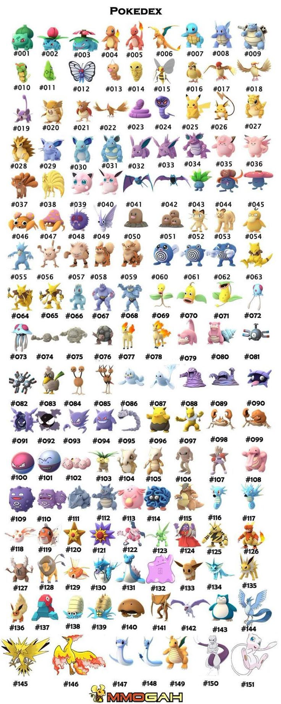

Welcome to the Pokeverse

Pokémon are creatures who have these magical powers which can
help people do hard stuff and
battle other
peoples' Pokémon.This is the home of all things Pokemon. Explore the regions, meet the trainers, and catch
'em
all!
Location: Kanto is located east of the Johto region, with both sharing the same landmass.
Major Cities: Significant locations include Pallet Town (where journeys begin), Saffron City (the largest
city), and Lavender Town (known for its Pokémon Tower).
Games: Kanto is featured in the original Red, Blue, and Yellow versions, their remakes FireRed and
LeafGreen, and the Let's Go series. Pikachu: While the official mascot of the franchise, Pikachu is
specifically the starter in Pokémon Yellow and Pokémon: Let's Go, Pikachu!.
Legendary Trio: Kanto is home to the legendary birds: Articuno (Ice/Flying), Zapdos (Electric/Flying), and
Moltres (Fire/Flying).
Mewtwo & Mew: Mewtwo, a powerful Psychic-type created through genetic engineering, is found in Cerulean
Cave, while its progenitor Mew is a rare "Mythical" Pokémon.
Kanto



The Kanto region is the first region introduced in the
Pokémon series.
It
is home to many iconic Pokémon
and the
original eight gyms.Kanto Pokémon are the original 151 creatures from the first generation of Pokémon games
(Red,
Blue, Yellow, FireRed, LeafGreen, Let's Go Pikachu/Eevee) set in the Kanto region, featuring iconic starters
like
Bulbasaur, Charmander, Squirtle, and legendaries such as Mewtwo and the Articuno, Zapdos, Moltres trio,
forming the
foundational Pokédex that introduced trainers to the world of Pokémon battles and exploration.The main
Pokémon
Professor in the Kanto region is Professor Samuel Oak, based in Pallet Town, who studies human-Pokémon
relationships, gives starter Pokémon (Bulbasaur, Charmander, Squirtle) to new trainers, and tasks them with
completing the Pokédex. Other Kanto-related professors include Professor Cerise (studying world mysteries)
and
Professor Friede, though Friede leads the Rising Volt Tacklers and is connected to Kanto through his past
and
travels. In the Pokémon
anime, the Kanto region is the setting for Ash Ketchum's original journey and several subsequent arcs. While
it
shares its basic layout with the video games, the anime version is significantly larger and includes
numerous
exclusive locations that are not present in the games.